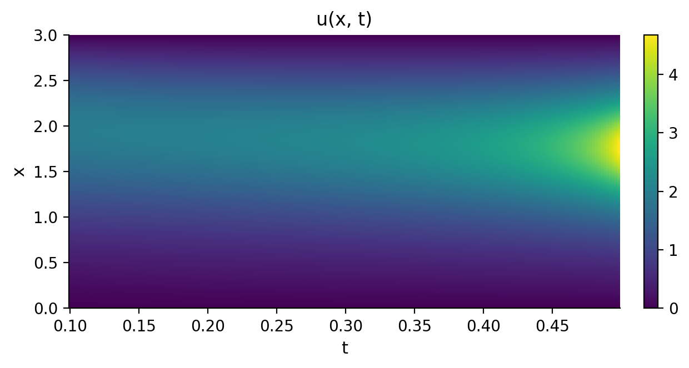
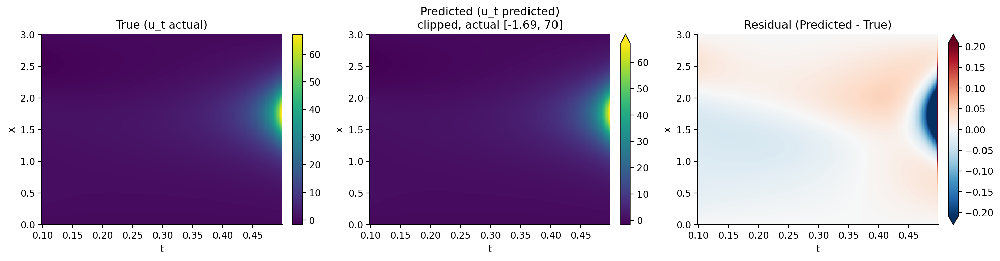
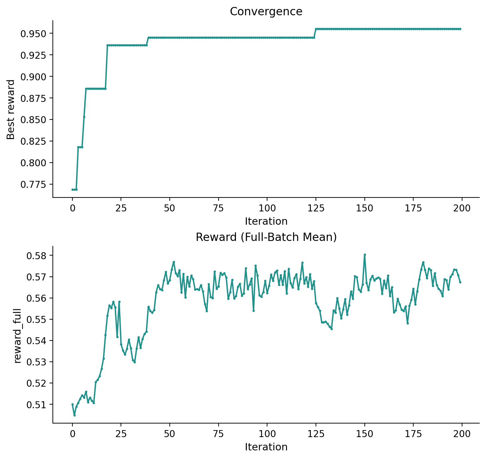
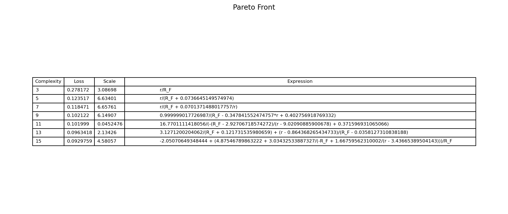
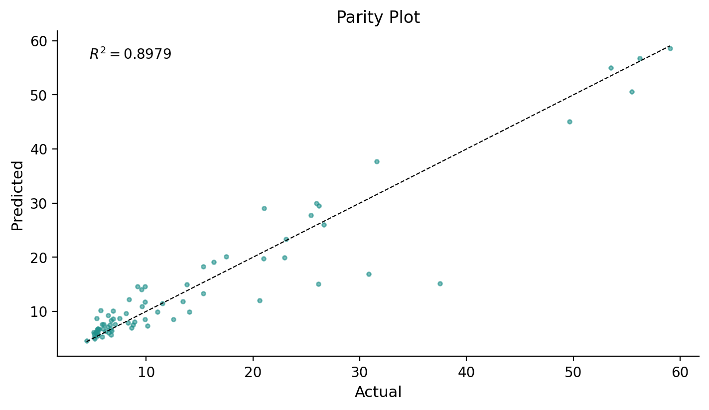
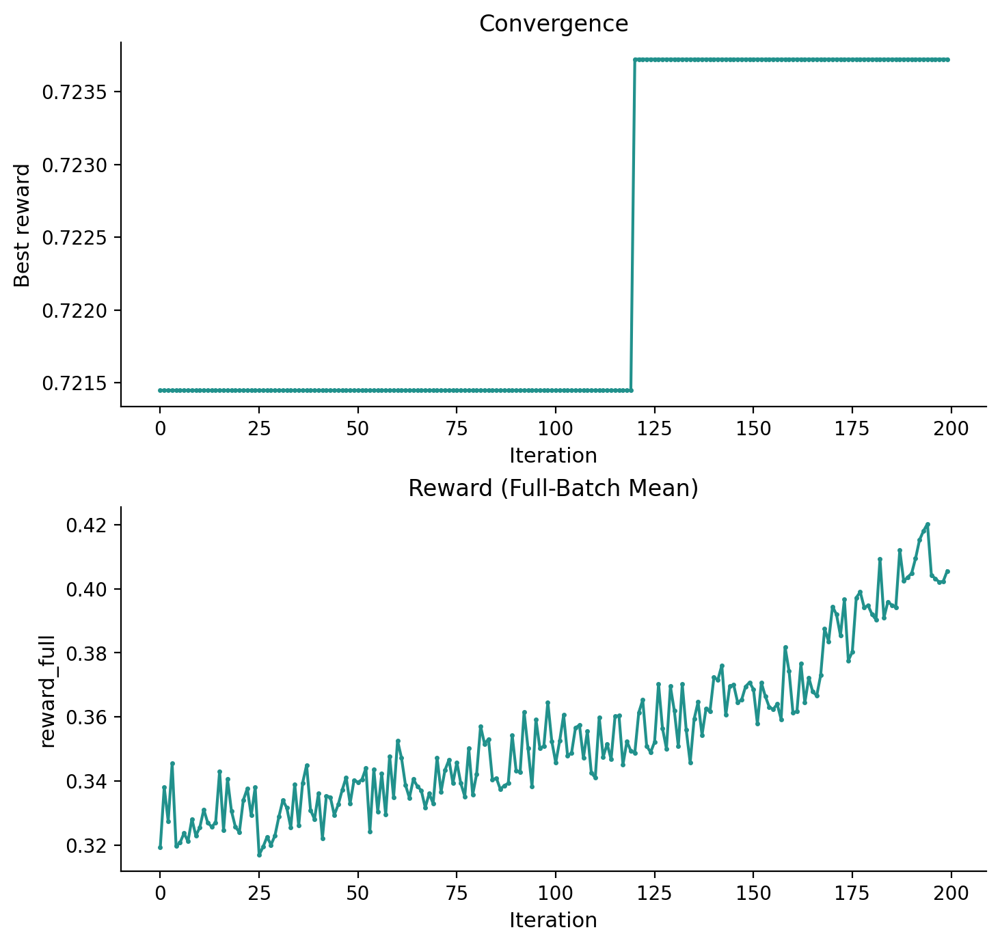

DISCOVER
A recurrent controller writes expression trees token by token and is trained on its own best-rewarded draws; the coefficients come from a platform refit.
Usage
import kd
from kd import DiscoverConfig
dataset = kd.load_chafee_infante()
model = kd.Model(
algorithm="discover",
generations=200,
config=DiscoverConfig.chafee_preset(seed=42),
)
model.fit(dataset)
Main parameters
| Parameter | Default | Resume | Description |
|---|---|---|---|
batch_size |
16 |
resume-safe | Controller samples per Runner iteration. |
learning_rate |
0.001 |
resume-safe | Controller learning rate. |
entropy_weight |
0.005 |
resume-safe | Exploration-entropy weight. |
reward_alpha |
0.01 |
resume-safe | Reward sparsity trade-off. |
max_length |
15 |
init-only | Maximum generated expression length. |
epsilon |
0.05 |
resume-safe | Risk-seeking reward quantile: the top-epsilon fraction of a batch's rewards feeds the policy-gradient update. |
magnitude_filter |
False |
resume-safe | Reject fitted coefficients outside the reference magnitude bounds. |
All fields of DiscoverConfig
| Field | Type | Default |
|---|---|---|
n_iterations |
int |
2000 |
seed |
int |
0 |
library |
LibraryConfig |
LibraryConfig(...) |
min_length |
int |
2 |
max_length |
int |
15 |
batch_size |
int |
16 |
num_units |
int |
16 |
num_layers |
int |
1 |
embedding_dim |
int |
4 |
observe_parent |
bool |
True |
observe_sibling |
bool |
True |
observe_action |
bool |
False |
observe_dangling |
bool |
False |
use_embedding |
bool |
False |
attention |
bool |
False |
attn_length |
int |
10 |
initializer |
Literal['xavier', 'zeros'] |
xavier |
epsilon |
float |
0.05 |
baseline |
str |
R_e |
entropy_weight |
float |
0.005 |
gamma |
float |
0.5 |
reward_alpha |
float |
0.01 |
learning_rate |
float |
0.001 |
entropy_gamma |
float |
1.0 |
max_diff_order |
int \| None |
4 |
use_repeat_prior |
bool |
True |
repeat_tokens |
list[str] |
['add'] |
repeat_max |
int |
5 |
use_trig_prior |
bool |
True |
use_inverse_prior |
bool |
True |
use_diff_descendant_prior |
bool |
True |
use_diff_child_prior |
bool |
True |
soft_length_loc |
float \| None |
None |
soft_length_scale |
float |
5.0 |
stability_selection |
int |
0 |
stability_queue_capacity |
int |
10 |
magnitude_filter |
bool |
False |
diagnostic_scaffold |
bool |
False |
diagnostic_scaffold_diffusion_tokens |
tuple[str, ...] |
() |
diagnostic_scaffold_reaction_tokens |
tuple[str, ...] |
() |
diagnostic_scaffold_root_tokens |
tuple[str, ...] |
('add', 'sub') |
diagnostic_scaffold_neutral_tokens |
tuple[str, ...] |
() |
token_bias_tokens |
tuple[str, ...] |
() |
token_bias_weight |
float |
0.0 |
pinn |
PINNConfig \| None |
None |
Worked example
The run below uses the Chafee-Infante dataset that ships with KD: a 301 × 200
grid over x in [0, 3] and t in [0.1, 0.5], carrying a single hump held at
zero at both ends of the interval. Above u = 1 the cubic term is larger than
the linear one, so the hump climbs from 1.94 at the first time step to 4.67 at
the last while diffusion keeps its profile smooth.

The equation returned by the run:
| Equation | |
|---|---|
| Discovered | \(u_t = 0.9924\,u_{xx} -0.9792\,u +0.9926\,u^3\) |
| Reference | \(u_t = u_{xx} -u +u^3\) |
All three terms are recovered. All three reference coefficients have magnitude
1, and the largest deviation from it here is 2.1%. The search was not narrowed
to those terms: the run was given a list of operator tokens (add, mul,
div, diff_x, diff2_x, diff3_x, n2, n3) rather than candidate terms,
so the second derivative and the cubic term were each assembled one token at a
time as the controller sampled.

Result interpretation
model.best_score_ is DISCOVER's own reward,
(1 - reward_alpha * terms) / (1 + sqrt(nmse)): higher is better, on a scale
that runs to 1. This run ends at 0.9548, and both parts of that number can be
read directly: the fit's nmse is 2.53e-04, whose square root sets the
denominator, and reward_alpha, at its default of 0.01, subtracts 0.03 from the
numerator for the three terms of the answer. The reward combines fit and length,
so nmse alone does not determine which of two expressions is preferred.
Every derivative in the run is a finite difference of the observations. The
fitted equation itself is on model.result_.equation, term by term with its
coefficient.
The search is recorded as well. kd.VizEngine renders the per-iteration
record; alongside the universal convergence curve, DISCOVER contributes four
diagnostic panels of its own, three of which this run drew (the full list is
under Visualization):


viz = kd.VizEngine(output_dir="out/chafee-infante")
viz.render_all(model.result_, algorithm=model.algorithm_, dataset=dataset)
Method
A recurrent controller writes the candidates. Each iteration it samples
batch_size token sequences, one token at a time in pre-order, from the
operator and variable library. Structural priors mask the tokens that would
produce an illegal expression as it goes: a cap on how often one token may
repeat, no addition or subtraction anywhere below a derivative, a derivative's
argument restricted to a state variable or to another derivative, no unary
operator directly under its own inverse, and a cap on the total order of a
derivative chain. Sequences that fail the length or legality screen are dropped
and the survivors deduplicated, so only distinct expressions are scored.
Scoring is performed by the platform. An expression is split at its top-level additions into terms, the terms' coefficients are fitted by least squares, and the fit's nmse together with the term count become the reward. The best expression and reward seen so far are carried for the whole run, so the convergence curve is non-decreasing.
The update rule is risk-seeking policy gradient. Invalid samples are dropped, the top
epsilon fraction of the rest by reward is kept, a scalar baseline is
subtracted, and one Adam step is taken on the policy-gradient loss plus an
entropy bonus. The controller is trained on its own best draws rather than on the
average of the batch, and the entropy term keeps it sampling widely while it
learns. One controller iteration is one KD iteration, and generations sets how
many are run.
The coefficients in the returned equation come from a platform refit rather than from the controller: DISCOVER searches for the structure, and the coefficients are fitted on that structure by the same least-squares fit that scored it during the search.
Tabular regression
DISCOVER also searches plain X -> y tables. Passing fit() a
kd.TabularDataset rather than a PDEDataset selects the tabular mode from the
data itself, and the rest of the call is unchanged.
config = DiscoverConfig(
seed=0, batch_size=1000, max_length=15, reward_alpha=0.005
)
model = kd.Model(algorithm="discover", generations=200, config=config)
model.fit(kd.load_tlc_cc())
The controller and its training are unchanged. The mode changes which tokens the
controller may draw and how complexity is counted. The token vocabulary is the
table's own feature columns together with add, sub, mul and div, which KD
derives from the dataset, so there are no derivative tokens and no library to
configure. A const terminal joins them, and each distinct candidate that draws
one has those constants fitted before it is scored, so a coefficient inside the
expression is reached by fitting rather than assembled token by token.
Complexity is counted in tokens rather than in terms, so the reward's parsimony
charge is per token.
The answer arrives as a REGRESSION equation on result_.equation, with the
target column on the left of it. result_.pareto_front() carries the search's
nondominated set alongside it, each entry with its expression, its token count,
its loss and the outer coefficient fitted for it. The layout itself is described
under data requirements.
The run below uses that table. Its 74 rows come from an automated
column-chromatography platform: the features are the thin-layer retardation
factor R_F and the petroleum-ether fraction r of the eluent, and the target
is the retention volume V_S in millilitres. A formula relating the three has
been published for this table (Xu et al.,
2025). The settings are seed 0,
200 iterations, 1000 draws per
iteration, expressions of at most 15 tokens, and reward_alpha 0.005.
| Equation | |
|---|---|
| Discovered | \(V_S = \dfrac{r}{0.1507\,R_F + 0.0111}\) |
| Reference | \(V_S = \dfrac{r}{0.147\,R_F + 0.0114}\) |
Both rows are written as r / (a R_F + b). Scoring is scale-free, so the search
returns a bare expression with the outer coefficient fitted beside it, and this
answer arrived as 6.634 times r / (R_F + 0.0737); dividing through puts it in
the published form. The two coefficients land 2.5% and 2.6% from the published
pair, from one run at a fixed seed, with the search given four arithmetic
operators and two column names rather than any candidate terms.
That expression is five tokens long, and it is an entry on the run's Pareto
front rather than the answer the run selected. Three of the 74 rows were
measured at r = 0, where the formula returns zero against measured volumes of
4.41, 5.17 and 5.86 mL, so an expression carrying an intercept fits the table
more closely. The answer this run selected carries one: nine tokens, at an nmse
of 0.1021 against the five-token law's 0.1235.



References
Du et al. (2024). "DISCOVER: Deep identification of symbolically concise open-form partial differential equations via enhanced reinforcement learning". Phys. Rev. Research 6, 013182. Paper · arXiv:2210.02181
Code: menggedu/DISCOVER